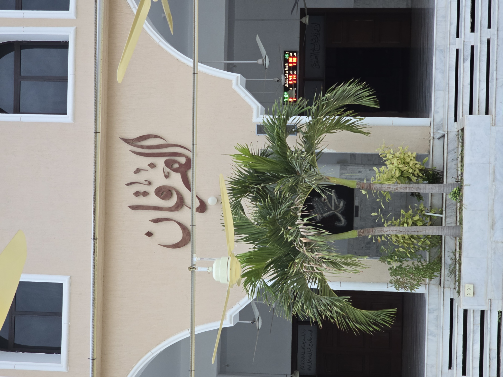

Latest Announcement
Website content will be connected to the admin panel after design approval.
Read more →
| Prayer | Adhan | Jamaat |
|---|
Website content will be connected to the admin panel after design approval.
Read more →Every Sunday after Dhuhr prayer.
Read more →